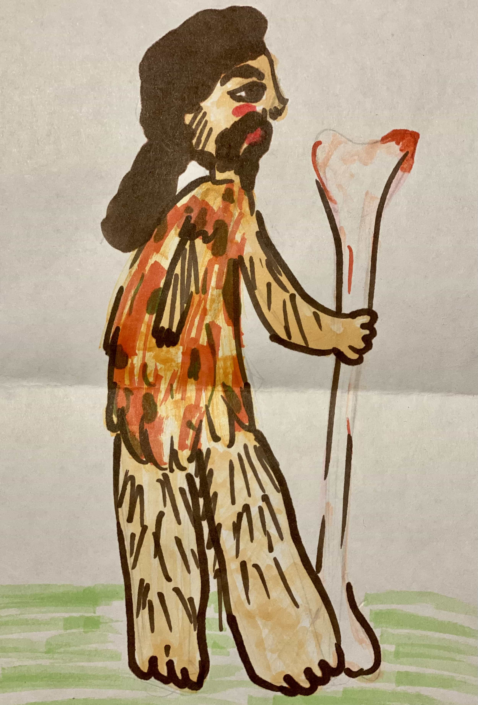

Происхождение человека
 До сих пор нет единого мнения о происхождении человека на Земле. Религия учит, что Бог сотворил Землю, заселив ее рыбами, птицами и зверями. А затем по своему подобию создал человека. Ученые придерживаются другой точки зрения. Они считают, что самым далеким предком современного человека является человекообразная обезьяна, жившая более 3 млн лет назад в Восточной Африке. Более 2 млн лет назад на смену ей пришел человек умелый. Мозг этого существа был несколько больше, чем мозг человекообразной обезьяны.Человек умелый думал не только о немедленном добывании пищи, но и о том, как подготовить для этого необходимые инструменты. Рядом с костями человека умелого ученые находят обколотые камни — первые орудия труда.
Еще больший мозг имел человек прямоходящий, который произошел от человека умелого около 1,5 млн лет назад. Передвижение на двух ногах способствовало тому, что руки становились более ловкими, а кисти и пальцы — подвижными и гибкими. Такой человек уже мог делать различные каменные орудия труда. Общение и совместный труд способствовали развитию мышления и речи.
Назад